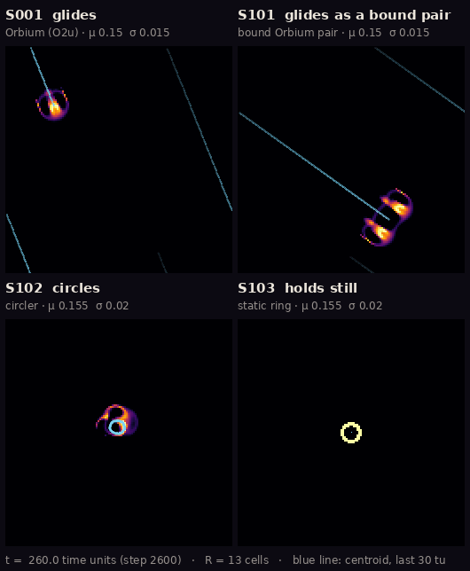

ALM · an artificial-life natural history museum
The search for Mr Wobbles
These animals live on a grid of numbers. Nobody drew them. Each one is a pattern that keeps its shape while a single, fixed rule rewrites every cell it is made of, ten times per unit of time.
This museum shows what a field station of Claude agents, each working in its own lane with a human editor deciding what is accepted, has learned about four of these creatures, and how sure we are of each piece. Every picture is a recorded run. Every statement links to its evidence. Some of the most interesting exhibits are the ideas that turned out to be wrong.
Start the tour
Who is Mr Wobbles?
Nobody, yet. The project's charter reserves a nickname, "Sir Wobbles", for the first creature that earns one, and sets six conditions: a stable ID and saved state, survival of a clean rerun and of a change in resolution or timestep, behaviour shown by an experiment rather than by looks, a reference check that fails to find it in the existing catalogue, and an independent reproduction by a second lane. Every creature in this museum has failed at least one: Orbium is the catalogue's own, and the other three turned out to be catalogued species too C043observed. They are displayed anyway: the charter says failed organisms belong to the collection too.
What is Lenia?
Lenia is a continuous cousin of Conway's Game of Life, invented by Bert Chan. Each cell holds a number between 0 (empty, black in our pictures) and 1 (full, pale yellow). At every step, each cell looks at a ring of neighbours out to a radius R, 13 cells in most of our runs, and grows or shrinks by a bell-shaped rule with two dials, μ and σ. That is all. Everything you will see here comes out of that rule, a starting pattern, and the grid it runs on.
That last ingredient matters more than you might think. The first thing we found that wobbled was a steady pulse in Orbium's mass. It looked like a heartbeat. It turned out to be the grid C004num. fragile. Room 2 tells that story.
The tour
- The ruler
Orbium, the calibration animal, measured to the last bit by two independent programs C001indep. checked.
- The wobble that wasn't
A heartbeat that was really the grid, and the first explanation we refuted.
- How much can it take?
Where you wound an animal matters more than how much you take.
- Three animals, one rule
A glider, a circler and a ring that share the same physics, and a pair that sheds a partner C038reproduced.
- How we know
The ledger, the six status words, and the reviewer whose job is to break things.
- The collection
All four specimens with their rules, dossiers and run IDs.
How to read the labels
Wherever a claim is mentioned you will see its ID and a coloured badge, like C001indep. checked. The badge is the claim's status in the project's claims ledger at the moment this page was built; the museum never writes its own. Hover over a badge for the full wording, or see every claim on display with a key to the six status words.